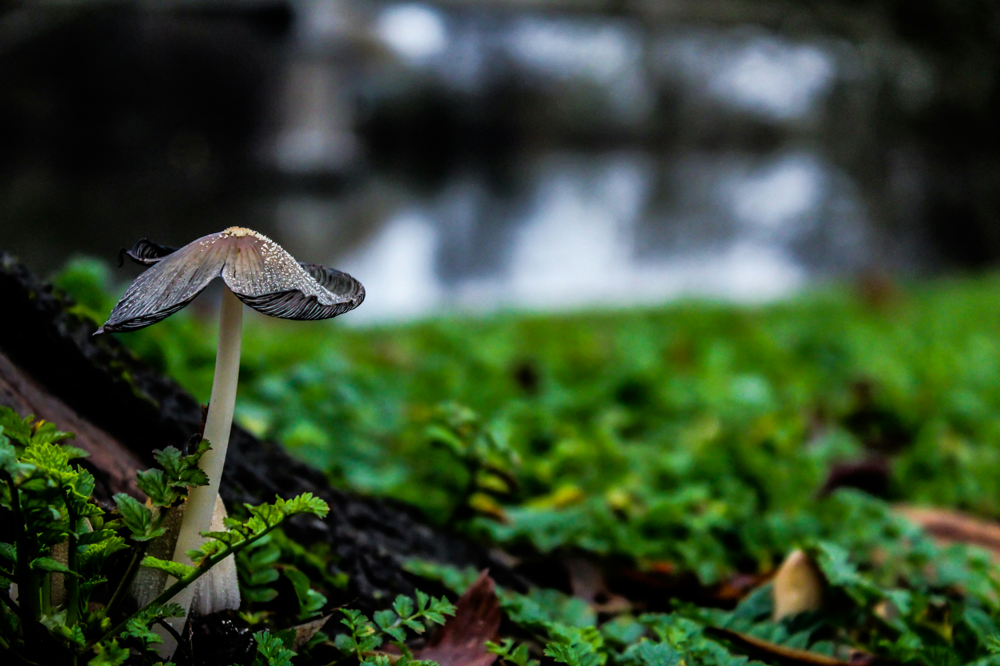
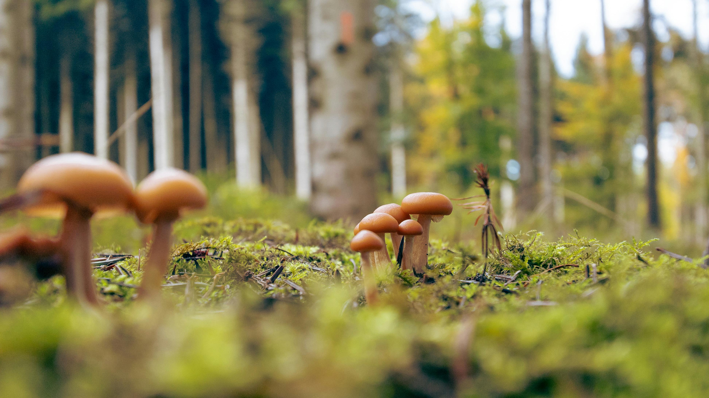
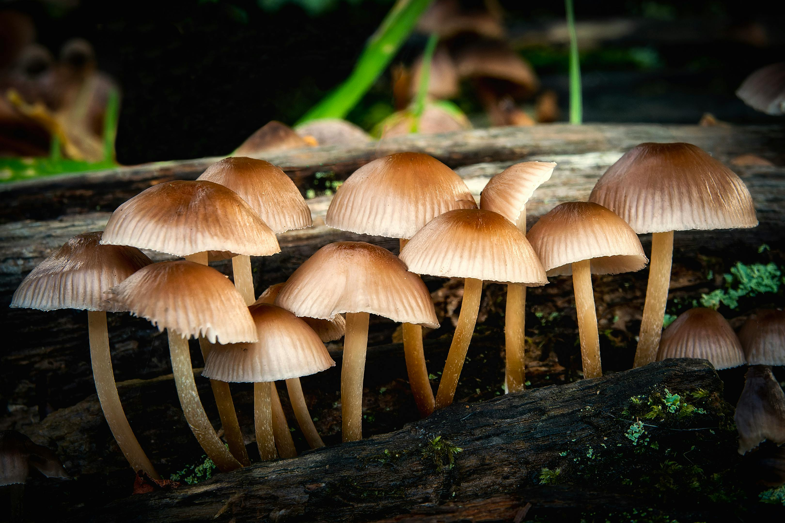

The Calendar
Foraging Through the Seasons

Spring (Feb–Apr)
Morels emerge in the Western Ghats. St. George's mushrooms in grasslands. Excellent for wood ears.
MorelWood Ear

Summer (May–Jul)
Pre-monsoon species after first rains. Porcini in higher elevations. Chicken of the Woods on fallen oaks.
Chicken of Woods

Monsoon (Aug–Sep)
Peak season! Chanterelles, oyster mushrooms, Reishi and Lion's Mane are most abundant in forests now.
ChanterelleReishi

Autumn (Oct–Jan)
Late boletes and hedgehog mushrooms. Beefsteak fungus in abundance. Coastal foraging begins.
BoleteBeefsteak